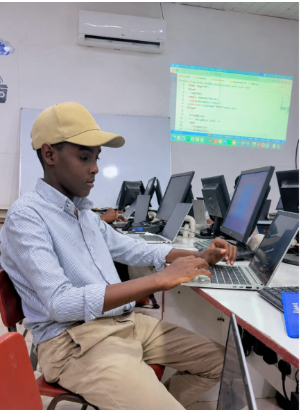
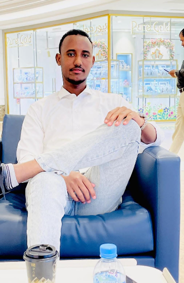
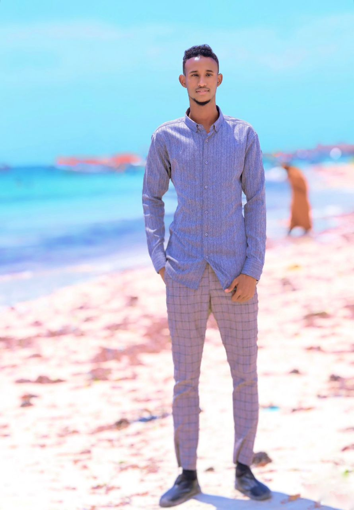

Eng ibraahim
Ibraahim waa horumariye mareegaha (Web Developer) oo xirfad leh, kana badan shan sano oo waayo-aragnimo ah u leh HTML, CSS, JavaScript, iyo PHP. Wuxuu sameeyay mareegooyin badan oo guul leh kuwaas oo loogu talagalay ganacsiyo iyo ururro kala duwan. Khibraddiisa iyo aqoontiisa ayaa ka caawisay inuu abuuro mareego tayo sare leh oo daboola baahiyaha macaamiisha.

Yuunis Ahmed
younis ahmed he is My brother is one of the most important people in my life. He is kind, hardworking, and always supports me when I need help. He enjoys learning new things and spends his time doing useful activities. I respect him because he gives me good advice and encourages me to achieve my goals. We spend time together talking, studying, and helping each other. I am proud to have such a caring and responsible brother, and I am grateful for everything he does for our family.

Hon Dayax
agacaygu waa Dayax. Waxaan ahay arday jaamacadeed oo dhigta Cilmiga Teknoolojiyadda iyo Computer Applications. Waxaan aad u xiiseeyaa barashada waxyaabo cusub, gaar ahaan tiknoolajiyadda, naqshadaynta mareegaha (web design), iyo horumarinta luqadda Ingiriisiga. Waqtigayga firaaqada ah waxaan jeclahay daawashada filimada, dhageysiga podcast-yada, iyo samaynta naqshado iyo muuqaallo. Waxyaabahani waxay iga caawiyaan inaan kordhiyo aqoontayda iyo hal-abuurkayga. Waxaan ahay qof dadaal badan, hammi leh, oo mar walba diyaar u ah inuu wax barto. Hadafkaygu waa inaan noqdo xirfadle ku guulaysta dhinaca IT-ga isla markaana bulshada wax ku biiriya mustaqbalka.

Omar clqaadir cantan
Omar Cartan, Omar Cartan waa garsoore (referee) Soomaaliyeed oo ka tirsan garsoorayaasha kubbadda cagta. Wuxuu ka qayb qaatay dhexdhexaadinta ciyaaro heerar kala duwan ah, wuxuuna caan ku yahay garsooridda tartamada kubbadda cagta ee Soomaaliya.